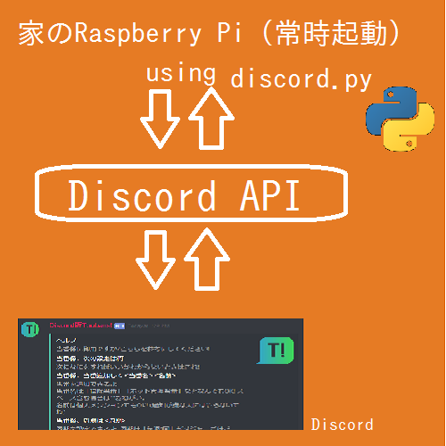

技術的な話
Toubans! Discord Versionは、名前と機能を似せていますが、Toubans!本家とは仕組みが100%異なります。

環境
Toubans! 本家はPHPで動いていますが、私はPHPなどちんぷんかんぷんなので、Python 3.6.5(バージョン大事)で動かしています。
discord.pyというすばらしいBot Clientがあるので、それのrewriteバージョンを使っています。
Pythonを常時稼動するために、家のRaspberry Pi 3を使っています。
設定画面
LIFFに相当するものがないのは(GUIが作れないとして)難点でした。
そのかわり、LIFFを使わなくてもguild.id(LINEのgroup idに相当)が取得できます。
設定は、チャット内でコマンドを送る(コマンドプロンプト好きならわかる)方法で行うことにしました。
設定はラズパイ内のjsonファイルに記録されています。
@bot.command(name="設定A")
async def config_a(ctx, v):
guild=ctx.message.channel.guild
config=_rjson()
config[str(guild.id)]["config_a"]=v
_wjson(config)
await ctx.send("設定しました!")
通知
通知はcreate_task内で無限ループをまわすという原始的な方法でやっています。
ほとんどがKenny2githubさん作。詳細はソースコードを!
ソースコード
GitHubにてMITライセンスで公開中。ToubansDiscord
本家にない! Discord versionの自慢
- Discordにメンション機能があるので、それを使える
- 設定変更役職を作って、当番設定を勝手に変えられないようにできる
- 絵文字入りヘルプメッセージ
- 必要なファイルは1ファイル(+トークンファイル)のみ
- 設定忘れを教えてくれる
- ボットと友達になる手間が省ける